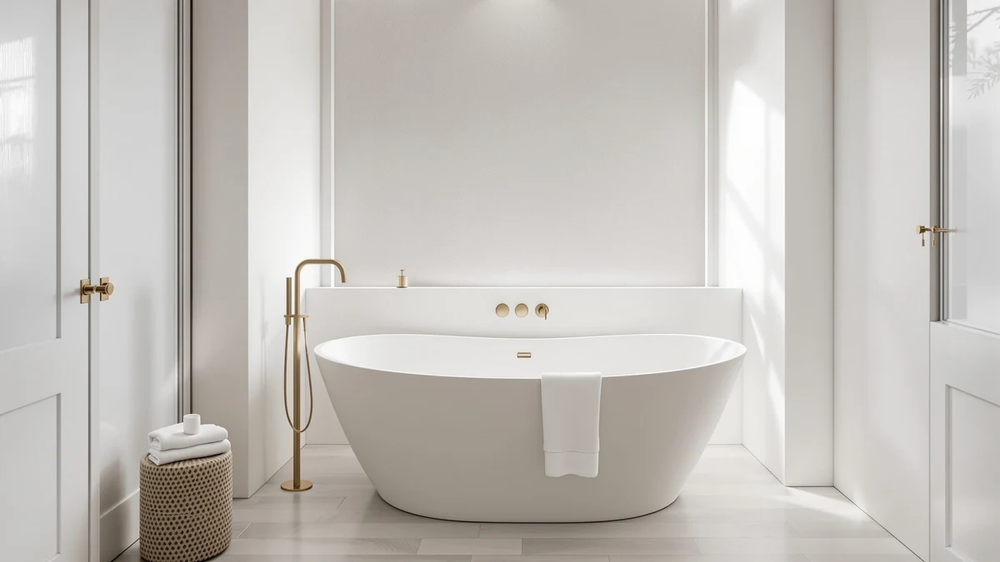

Best Freestanding Tub for Small Bathroom (2026)
Prices and picks verified as of August 2026. Independent, reader-supported reviews.


Quick Answer
After comparing seven acrylic freestanding tubs on footprint, price, and stated dimensions, the EliteEdge Freestanding Bathtub 59 inch Acrylic is the best freestanding tub for small bathroom projects that need a full-size soak without a 67-inch footprint. If your bathroom is even tighter, the 49-inch Garvee below is the shortest tub in this guide.
Our pick: Freestanding Bathtub 59 inch Acrylic, $669.99 Check Price on Amazon
Bottom line: our top pick is the Freestanding Bathtub 59 inch Acrylic Free Standing Tub 59 Inch at $669.99. The best budget option is the 67'' Acrylic Freestanding Bathtub at $631.27.
Things to Know Before You Buy
- Measure your doorway and hallway, not just the bathroom floor. A 67-inch tub can technically fit a small bathroom's floor space but still get stuck turning a corner on the way in. Check the tightest point in the path before you buy.
- Acrylic is the standard material at this size and price. All seven tubs here are acrylic, which is lighter than cast iron or stone resin and easier for two people to carry into a small bathroom without professional movers.
- The size range that matters is 49 to 67 inches. Nine inches sounds small until you are measuring a cramped bathroom, and the gap between our shortest and longest pick can decide whether a tub fits at all.
- The faucet is sold separately. Every freestanding tub in this guide ships as the tub, overflow, and drain only. Plan for a floor-mount tub filler and its rough-in as a separate line item.
- A longer tub is not automatically the better small-bathroom tub. The 67-inch options here suit a small bathroom with a few extra inches to spare, but the 49 and 59-inch picks are the better fit for genuinely tight spaces.
Finding the best freestanding tub for small bathroom layouts means shopping by footprint first, because most freestanding soakers are sized for bathrooms with feet to spare, not the tighter layouts common in a lot of American homes. A 67-inch tub looks identical to a 59-inch one in a product photo, but that eight inches can be the difference between a tub that glides through your doorway and one that gets stuck in the hallway. We rounded up seven acrylic freestanding tubs spanning 49 to 67 inches so you can match the tub to your actual room instead of the other way around.
We compared listed dimensions, material, and verified pricing across the freestanding acrylic tub market before narrowing the field to models that state their exterior size clearly enough to check against a floor plan. Our top pick for most small bathrooms is the EliteEdge Freestanding Bathtub 59 inch Acrylic, which holds the line at 59 inches, long enough for a real soak, short enough to clear a standard bathroom door.
Below we explain how we picked and compared these tubs, then walk through each one: the 49-inch Garvee for bathrooms too tight for anything else, three 59-inch acrylic tubs at different price points, and three 67-inch models for small bathrooms that can spare a few extra inches for a deeper soak. Every tub here ships as the tub only, so budget separately for a floor-mount faucet and the plumbing rough-in.
Why You Should Trust Us
This guide is written and maintained by Ilane Tall, who covers bathroom fixtures across a network of review sites and spends the bulk of that work comparing spec sheets instead of repeating manufacturer copy. We do not run a fake testing lab, and we do not claim to have installed all seven of these tubs ourselves. What we do is read every listed dimension, cross-check the stated size against the product photos, and note where a listing is vague about depth or drain placement so you are not surprised at delivery. Our Amazon affiliate commission never changes which tub we rank first.
How We Picked
We started with the broader freestanding acrylic tub market and filtered down to models with an exterior length of 67 inches or less, the rough ceiling for what a small bathroom can absorb. Every finalist had to list its dimensions clearly, come with the overflow and drain hardware that budget listings often omit from the description, and stay in stock at a price under $800. We dropped anything without stated dimensions in the listing, since a small bathroom cannot afford a guessing game on fit. That left seven tubs spanning 49 to 67 inches, from three different manufacturers, all sharing the same acrylic construction.
How We Compared
For each tub we recorded exterior length, material, price, and brand, then compared those figures against the doorway and floor-space constraints a small bathroom typically imposes. We grouped the seven picks by size tier, 49 inches, 59 inches, and 67 inches, because that grouping matters more than brand name when you are working with a fixed room. Within each tier we compared price against what the listing actually promises, since two 59-inch acrylic tubs at different prices should differ in something more than the number on the tag. Where a listing was ambiguous about finish or size, we flagged it in that tub's writeup instead of guessing.
Our Picks

Freestanding Bathtub 59 inch Acrylic
What we like
- Fits the 59-inch middle ground that suits most small bathrooms
- Acrylic shell keeps the tub light enough for two people to carry in
- EliteEdge lists exterior dimensions clearly, so there is no fit guesswork before delivery
- Priced at the low end among the 59-inch tubs in this guide
Flaws but not dealbreakers
- At 59 inches it still needs more clearance than the 49-inch Garvee
- EliteEdge is a newer name in freestanding tubs without the track record of Garvee or IDEALHOUSE
| Material | — |
| Size | 59 Inch |
The EliteEdge Freestanding Bathtub 59 inch Acrylic is our pick for most small bathrooms because 59 inches is close to the shortest length that still feels like a full-size soaking tub rather than a compromise. It costs $669.99, which lands in the middle of what the three 59-inch tubs in this guide charge, and the listing states its exterior dimensions plainly enough that you can hold a tape measure to your floor plan before ordering.
Like every tub here, it ships as the acrylic shell with drain and overflow hardware, not a complete faucet kit, so plan a separate budget line for a floor-mount filler. EliteEdge does not carry the same brand recognition in this category as Garvee or IDEALHOUSE, so if a long manufacturer track record matters to you, weigh that against the tub's straightforward size and price before you buy.

49 Inch Freestanding Acrylic Bathtub
What we like
- Shortest freestanding tub in this roundup at 49 inches
- Acrylic construction keeps it light enough to maneuver into a tight room
- Garvee is a familiar name across several of our other freestanding-tub roundups
- Frees up floor space a 59 or 67-inch tub could not spare
Flaws but not dealbreakers
- Highest price of the sub-$800 tubs here despite being the shortest, at $761.84
- A 49-inch interior will feel snug for anyone over about six feet tall
| Material | — |
| Size | 49 Inch |
The Garvee 49 Inch Freestanding Acrylic Bathtub is the shortest tub in this guide by a wide margin, ten inches shorter than the next-smallest pick. That gap matters if you have already measured your bathroom and ruled out anything in the high 50s or 60s. At $761.84 it is also priced higher than several longer tubs in this guide, a trade-off you are paying for the footprint rather than for extra size.
Garvee shows up across several of our freestanding-tub guides, which is worth something if brand consistency matters to your research. The obvious limitation is interior room: 49 inches suits a shorter bather or a household where a small bathroom having a real soaking option at all matters more than stretching out fully. If your bathroom can spare even a few more inches, the 59-inch picks below give you more room with the same basic acrylic construction.

67'' Acrylic Freestanding Bathtub Extra-Deep
What we like
- Extra-deep design, called out directly in the product name, for a fuller soak
- Lowest price of the three 67-inch tubs in this guide at $631.27
- IDEALHOUSE supplies three of the seven tubs in this roundup, all at a similar price point
- Acrylic build keeps a 67-inch tub manageable to carry despite its length
Flaws but not dealbreakers
- 67 inches is the upper limit of what most small bathrooms can take, so measure carefully first
- The listing does not specify how much deeper this model is than IDEALHOUSE's standard-depth 67-inch tub
| Material | — |
| Size | 67 Inch |
The IDEALHOUSE 67'' Acrylic Freestanding Bathtub Extra-Deep is the longest tub in this roundup, and its name tells you what you are paying for: more depth, not just more length. At $631.27 it also happens to be the least expensive of the three 67-inch tubs we compared, which makes it worth a look if your small bathroom has the extra inches to spare and you want to put the savings toward a deeper soak instead of a shorter one.
IDEALHOUSE supplies three different tubs in this guide, all acrylic and all in a similar price band, so brand alone will not narrow your decision if you are considering more than one. The real question is your floor plan: 67 inches is close to the ceiling of what qualifies as a small-bathroom tub at all, so confirm the doorway and turning clearance before you order rather than after.

67" Acrylic Freestanding Bathtub Deep
What we like
- Same 67-inch IDEALHOUSE footprint as the Extra-Deep model, with standard depth
- Acrylic construction consistent with the rest of this guide
- Gives shoppers a second 67-inch option at a different depth profile
- IDEALHOUSE's repeated presence in this guide makes side-by-side comparison easy
Flaws but not dealbreakers
- Most expensive tub in this entire roundup at $789.53
- Costs more than the Extra-Deep version from the same brand despite offering less depth by name
| Material | — |
| Size | 67 inch |
The IDEALHOUSE 67" Acrylic Freestanding Bathtub Deep sits right alongside its Extra-Deep sibling at the same 67-inch length, but the name signals a standard depth rather than the deeper soak the other model advertises. At $789.53 it is the priciest tub in this guide, which is worth noting since the Extra-Deep version from the same brand costs $158 less.
If depth is not your top priority and you simply want the 67-inch footprint from a brand that also makes the Extra-Deep option, this is a reasonable pick, but the price gap is hard to ignore. Most small-bathroom shoppers comparing the two IDEALHOUSE tubs side by side will find the Extra-Deep model the more sensible buy unless a specific listing detail on this one matters to your plans.

59 Inch Acrylic Freestanding Bathtub
What we like
- 59-inch length matches our top pick's footprint from a different manufacturer
- Priced between the two 67-inch IDEALHOUSE tubs and the EliteEdge pick
- Acrylic build stays consistent with the rest of the IDEALHOUSE line in this guide
- Useful if you are already comparing IDEALHOUSE's 67-inch models and want a shorter option from the same brand
Flaws but not dealbreakers
- Costs $25 more than the EliteEdge tub at the same 59-inch length
- The listing does not name a distinguishing feature over the EliteEdge tub beyond brand
| Material | — |
| Size | 59 Inch |
The IDEALHOUSE 59 Inch Acrylic Freestanding Bathtub covers the same 59-inch length as our top pick, just from a different manufacturer and at a $25 premium, $694.83 versus $669.99. If you are already leaning toward one of IDEALHOUSE's 67-inch tubs and want a shorter option from a brand you are comparing anyway, this fills that gap.
On paper the case for choosing this over the EliteEdge tub at the same length comes down to brand preference rather than a clear spec advantage, since both list the same acrylic construction and comparable pricing. If you have no reason to favor one brand over the other, the EliteEdge tub's lower price makes it the more straightforward choice at this size.

67 Inch Acrylic Freestanding Bathtub
What we like
- Least expensive of the three 67-inch tubs compared here, at $635.35
- Garvee also supplies the 49-inch pick, giving you a brand-consistent option at two very different sizes
- Standard acrylic construction matching the rest of the guide
- Meaningfully cheaper than the IDEALHOUSE 67-inch Deep model despite the same length
Flaws but not dealbreakers
- Still needs the same doorway and floor clearance any 67-inch tub demands
- Sits close in price to the shorter, easier-to-fit 59-inch options, so it only makes sense if you specifically want the extra length
| Material | — |
| Size | 67 Inch |
The Garvee 67 Inch Acrylic Freestanding Bathtub is the most affordable of the three 67-inch tubs in this guide at $635.35, undercutting the IDEALHOUSE Deep model by more than $150 for the same footprint. Garvee also makes the 49-inch tub earlier in this list, so if you like the brand but are unsure which length fits, you have two very different sizes to compare from the same manufacturer.
The catch with any 67-inch tub in a small-bathroom guide is the same regardless of price: confirm the doorway, hallway turns, and walk-around space before you commit, because length is the constraint here, not budget. At $635.35 this is the easiest 67-inch tub to justify on price, but it is not a shortcut around measuring your room first.

59 Inch Freestanding Bathtubs White
What we like
- 59-inch length matches our top pick's balance of size and soaking room
- White finish is stated directly in the product name, removing any ambiguity at checkout
- GarveeLife rounds out the Garvee family of tubs in this guide with a finish-specific listing
- Priced close to the other 59-inch options, so finish preference will not cost you much extra
Flaws but not dealbreakers
- At $699.99 it costs $30 more than the EliteEdge tub at the same length
- A glossy white finish shows water spots more readily than a matte surface and needs regular wiping
| Material | — |
| Size | 59 Inch |
The GarveeLife 59 Inch Freestanding Bathtubs White is, as the name promises, a white acrylic tub at the same 59-inch length as our top pick. Spelling out the color in the listing title is a small thing, but it removes the guesswork some competing listings leave you with when photos and descriptions do not clearly confirm finish.
At $699.99 it costs a bit more than the EliteEdge tub of the same size, so the premium here goes toward the confirmed white finish rather than any difference in dimensions. Like every glossy acrylic tub in this guide, expect to wipe down water spots regularly to keep that finish looking new.
Quick Comparison
| Product | Material | Price | Rating | Best for | Get it |
|---|---|---|---|---|---|
| Freestanding Bathtub 59 inch Acrylic | — | $669.99 | 4 | Most small bathrooms | View on Amazon → |
| 49 Inch Freestanding Acrylic Bathtub | — | $761.84 | 4 | The smallest bathrooms | View on Amazon → |
| 67'' Acrylic Freestanding Bathtub Extra-Deep | — | $631.27 | 4 | Small bathrooms wanting extra depth | View on Amazon → |
| 67" Acrylic Freestanding Bathtub Deep | — | $789.53 | 4 | 67-inch shoppers wanting standard depth | View on Amazon → |
| 59 Inch Acrylic Freestanding Bathtub | — | $694.83 | 4 | Brand-matched 59-inch shoppers | View on Amazon → |
| 67 Inch Acrylic Freestanding Bathtub | — | $635.35 | 4 | Best-priced 67-inch option | View on Amazon → |
| 59 Inch Freestanding Bathtubs White | — | $699.99 | 4 | Buyers who want white confirmed upfront | View on Amazon → |
The Competition
We looked at freestanding tubs well outside the 49 to 67-inch range before narrowing to the seven above. Anything longer than 67 inches got cut immediately, since the whole point of this guide is fitting a small bathroom, and a 71 or 72-inch soaker belongs in our full best freestanding bathtubs roundup instead. We also passed on cast iron and stone resin tubs at this size, since both materials add enough weight that a small bathroom's floor framing and a two-person carry-in become real concerns, and acrylic solves both problems at a lower price.
Within the acrylic category, we dropped listings that did not state exterior dimensions clearly, since a small-bathroom buyer cannot afford to guess at fit. A handful of sub-$500 tubs also got cut for reading more like decorative soaking tubs than fixtures meant for daily bathing, based on how thin the listed shell dimensions were relative to the advertised length. What is left are seven tubs we could confirm on size, material, and price, spread across the three size tiers that actually matter for a small bathroom.
Frequently Asked Questions
What is the best freestanding tub for small bathroom spaces?
For most small bathrooms, a 59-inch acrylic tub like the EliteEdge Freestanding Bathtub 59 inch Acrylic offers the best balance of soaking room and doorway clearance. If your bathroom is tighter than that, the 49-inch Garvee is the shortest option in this guide, and if you have a few extra inches to spare, the 67-inch IDEALHOUSE and Garvee tubs offer more length.
How much clearance does a freestanding tub need in a small bathroom?
Beyond the tub's own footprint, aim for at least a few inches of walk-around space so you can clean behind it and reach the drain, and check that the tub can actually get through your doorway and any hallway turns before it reaches the bathroom. A 67-inch tub can fit a small bathroom's floor space and still get stuck in a narrow hallway on the way in.
Do these small-bathroom freestanding tubs come with a faucet?
No. Every tub in this guide ships as the acrylic shell with drain and overflow hardware only. A floor-mount tub filler and its rough-in plumbing are a separate purchase and should be budgeted for before you order the tub.